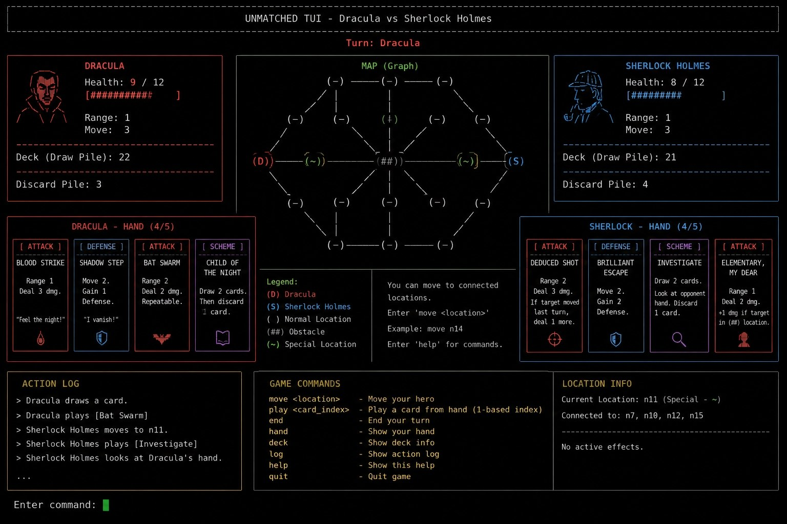

راهنمای جامع پیادهسازی TUI
پروتکل طراحی رابطهای مبتنی بر منو و ترمینال (Menu-Driven Apps)
واسط متنی کاربر (TUI) چیست؟
واسط متنی کاربر یا همان TUI (Terminal User Interface)، نوعی از برنامههای تعاملی است که درون محیط خط فرمان (کنسول) اجرا میشود اما برخلاف ساختارهای خطی سنتی (CLI)، رفتاری مشابه برنامههای گرافیکی دارد. این سیستمها مبتنی بر منو (Menu-Driven) هستند؛ یعنی کاربر نیازی به تایپ مداوم دستورات ندارد و میتواند با استفاده از دکمههای جهتنما (Arrow Keys)، کلیدهای WASD یا کلیدهای عددی بین بخشها، منوها و پنلهای مختلف جابهجا شده و گزینهها را انتخاب کند.
الزامات و بخشهای اجباری در TUI پروژه
سیستم تعاملی شما برای بازی Unmatched باید حتماً شامل بخشهای ساختاریافته زیر باشد:
۱. منوی ناوبری اصلی (Main Menu)
منوی شروع با قابلیت انتخاب گزینهها (شروع بازی جدید، راهنما، تنظیمات و خروج) بدون نیاز به تایپ دستی.
۲. رندر پویای نقشه (Dynamic ASCII Map)
نمایش شبکهای و گرافیکی نقشه بازی با کاراکترهای متنی و تغییر آنی موقعیت مبارزان پس از حرکت.
۳. پنل وضعیت و آمار (Status Dashboard)
نمایش مقدار جان (HP)، تعداد کارتهای موجود در دست و موقعیت فعلی هر قهرمان به صورت تفکیکشده.
۴. باکس تاریخچه رویدادها (Action Log)
یک بخش اختصاصی در پایین یا کنار صفحه جهت نمایش زنده گزارشها (مثال: "مبارز A مقدار ۲ واحد آسیب به مبارز B وارد کرد").
نمونه مفهومی و الهامبخش از طراحی TUI
شما میتوانید از ساختار و چیدمان تصویر زیر جهت ایده گرفتن برای توزیع پنلها، منوها و فریم کادربندی ترمینال خود استفاده کنید:

ابزارها و کتابخانههای پیشنهادی در C++
جهت توسعه این واسط متنی در زبان C++ میتوانید از رویکردها و ابزارهای استاندارد زیر استفاده کنید:
یک کتابخانه فوقالعاده مدرن، مبتنی بر کامپوننت و شیءگرا برای C++ که ساخت منوها، لایوتهای افقی/عمودی و انیمیشنها را بسیار ساده میکند و از ویژگیهای واکنشگرا (Responsive) در ترمینال پشتیبانی میکند.
کتابخانه استاندارد، قدیمی و بسیار قدرتمند صنعت کامپیوتر برای کنترل مستقیم کاراکترها، مدیریت مکاننما (Cursor) و ساخت پنجرههای متنی مجزا در لینوکس و ویندوز.
اگر تمایلی به استفاده از کتابخانههای خارجی ندارید، میتوانید با ارسال دستورات متنی استاندارد به خروجی کنسول، موتور رندر متنی اختصاصی خود را پیادهسازی کنید؛ برای نمونه دستور پاکسازی صفحه (clear) یا جابهجایی مکاننما به ابتدا.